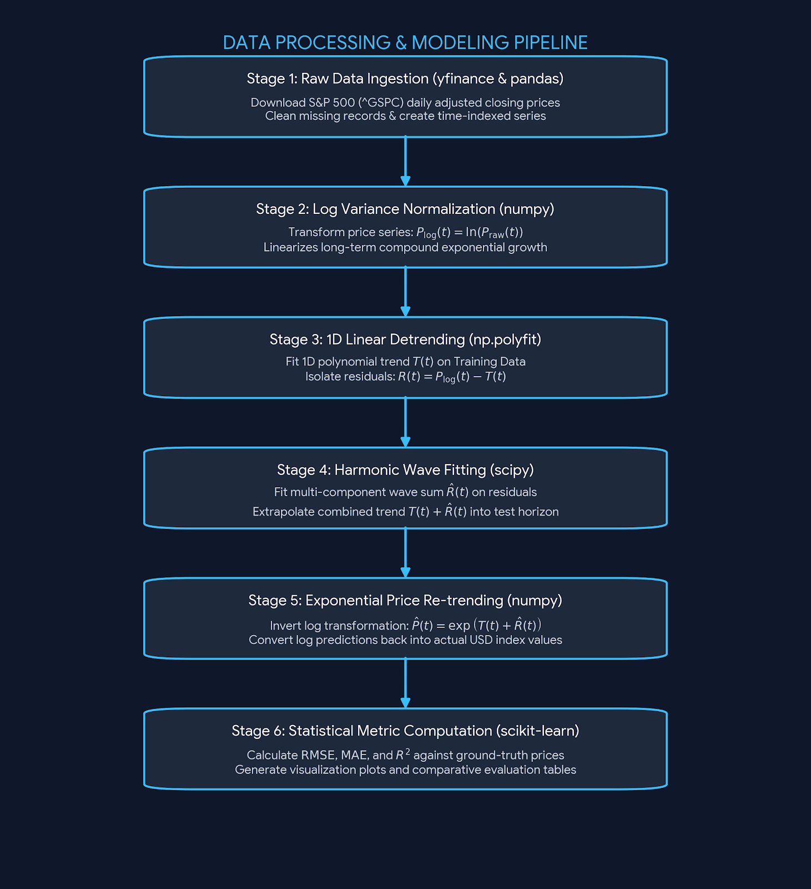
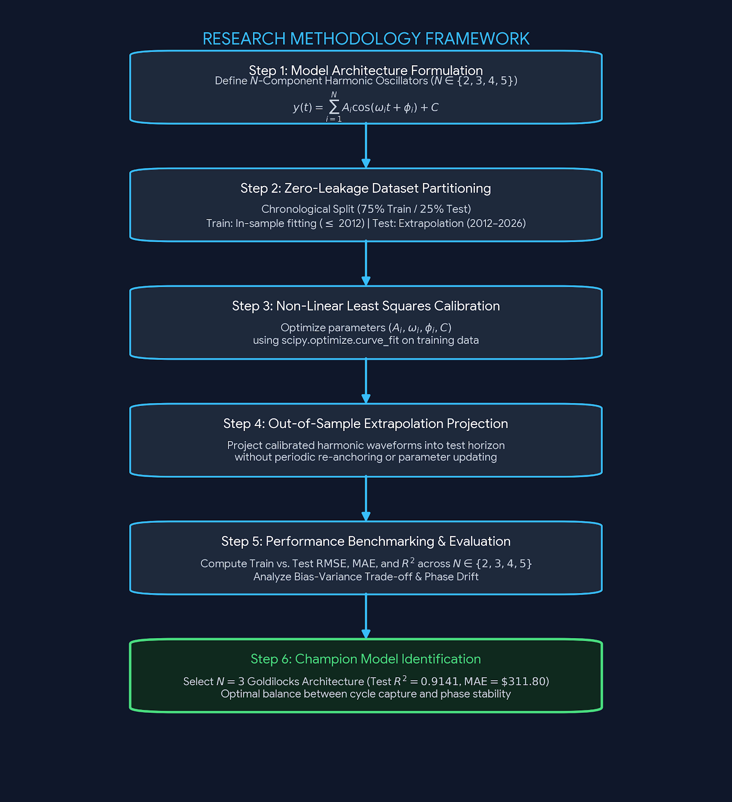
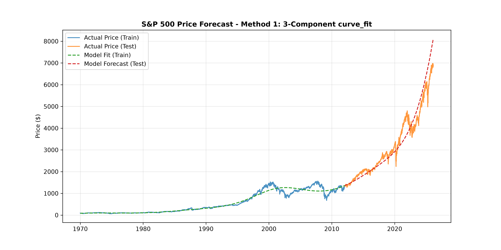
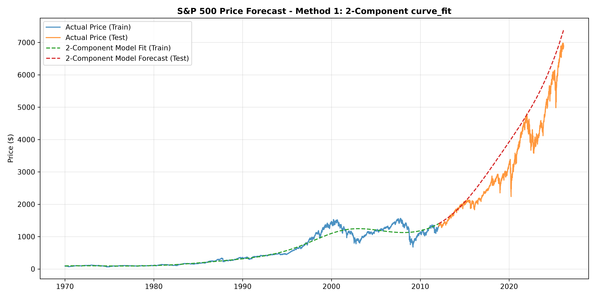
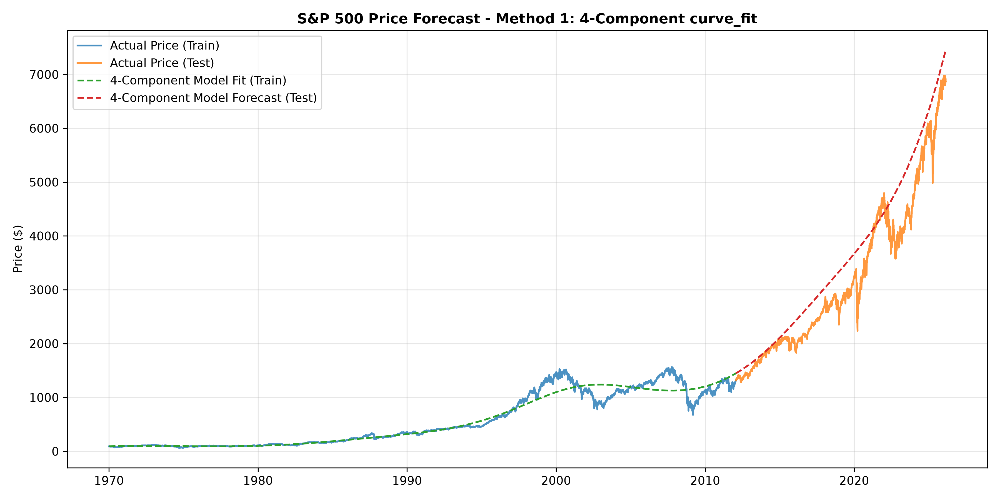
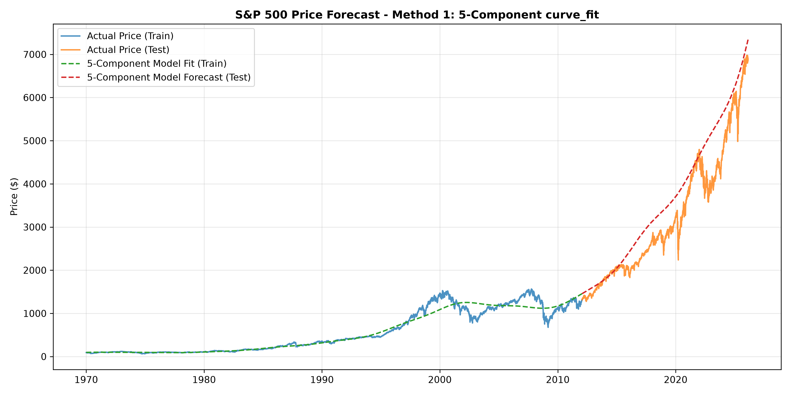

Simple Harmonic Motion (SHM) is fundamental to classical mechanics, describing everything from pendulums to molecular vibrations. However, when abstracted into generalized trigonometric series, harmonic oscillators become universal function approximators. By molding an oscillator's underlying parameters—amplitude, angular frequency, phase shift, and offset—a linear combination of simple waves can curve-fit virtually any complex continuous signal.
In financial time series forecasting, the challenge is not fitting past data; it is extrapolating into the unknown. This empirical study evaluates how varying the number of harmonic components (N = 2, 3, 4, 5) impacts out-of-sample forecast accuracy when modeling decades of the S&P 500 index under strict zero-data-leakage constraints.
The Mathematics of Molding Oscillators
A single simple harmonic component is governed by four adjustable weights or parameters:
When extending this to an N-component harmonic model, we superimpose multiple waves over a baseline trend:
By optimizing these parameters via non-linear least squares (scipy.optimize.curve_fit), we mold the wave mechanics to match empirical data:
- Amplitude (Ai): Scales the peak-to-trough magnitude, determining how much power a specific cycle exerts over the price trend.
- Angular Frequency (ωi): Controls the cycle period (T = 2π / ω). Lower frequencies capture long-term macroeconomic regimes; higher frequencies capture shorter-term oscillations.
- Phase Shift (φi): Horizontally shifts the wave to align peaks and troughs with historical market tops and bottoms.
- Vertical Offset (C): Re-centers the combined wave envelope along the detrended baseline.
Data Processing & Transformation Pipeline
To prepare financial time series for harmonic wave decomposition, raw market prices undergo systematic log variance normalization and detrending using core scientific Python libraries:
- Data Ingestion (
yfinance&pandas): Historical daily adjusted closing prices for the S&P 500 index (^GSPC) were ingested viayfinance.download()and cleaned into a continuous time-indexedpandas.DataFrame. - Log Variance Normalization (
numpy): Raw market index prices exhibit exponential long-term secular growth. Usingnp.log(), prices were transformed to log space to linearize compound growth trajectories. - 1D Linear Detrending (
np.polyfit): A linear polynomial trend line \(T(t)\) was fitted exclusively on training data to isolate stationary cyclical residuals \(R(t) = P_{\text{log}}(t) - T(t)\). - Harmonic Wave Fitting (
scipy): Non-linear least squares regression (scipy.optimize.curve_fit) optimized joint parameters \((A_i, \omega_i, \phi_i, C)\) for \(N = 2, 3, 4, 5\) components on training residuals. - Exponential Price Re-trending (
numpy): Optimized wave predictions were projected forward into the test period, re-combined with the trend line, and exponentiated back to dollar values: \(\hat{P}(t) = \exp(T(t) + \hat{R}(t))\). - Statistical Metric Computation (
scikit-learn): Out-of-sample accuracy was evaluated against ground-truth market prices using Root Mean Squared Error (RMSE), Mean Absolute Error (MAE), and Coefficient of Determination (\(R^2\)).

Research Methodology
To evaluate the multi-year extrapolation properties of harmonic oscillators without empirical contamination, we established a strict six-step quantitative research design. The methodology strictly enforces zero data leakage between training calibration and testing extrapolation horizons.

Empirical Benchmarking: N = 2 to N = 5 Components
All models were trained on 75% of historical S&P 500 data (log-linear detrended) and tested on the remaining 25% chronological split (pure multi-year extrapolation with zero look-ahead bias).
| Model Architecture | Train RMSE | Test RMSE | Train MAE | Test MAE | Train R² | Test R² |
|---|---|---|---|---|---|---|
| 2-Component Model | $125.77 | $658.54 | $72.93 | $525.37 | 0.9322 | 0.7981 |
| 3-Component Model OPTIMAL | $124.06 | $429.57 | $71.57 | $311.80 | 0.9340 | 0.9141 |
| 4-Component Model | $127.14 | $509.89 | $74.03 | $414.94 | 0.9307 | 0.8790 |
| 5-Component Model | $125.01 | $567.47 | $72.50 | $449.67 | 0.9330 | 0.8501 |
Visualizing the Champion: The 3-Component Sweet Spot
The visual forecast below showcases how seamlessly the 3-component harmonic curve anchors to the actual out-of-sample price trajectory (2012–2026), tracking both the macro trajectory and major market corrections.

Deconstructing the Performance Breakdown
1. N = 2 Underfits Macro Volatility (High Bias)
With only 2 cosine waves, the model lacks sufficient degrees of freedom. While it tracks the exponential drift, it completely ignores medium-term structural cycles, causing the forecast to over-extrapolate upwards and yield an unacceptable Test MAE of $525.37.
2. N = 3 Hits the "Goldilocks Zone"
The 3-component configuration achieves optimal balance (10 total parameters). It captures the long-term secular wave, the primary business cycle wave, and an intermediate structural correction wave. Because all three represent persistent low-frequency macro rhythms, their phase relationship remains remarkably stable out-of-sample.
3. N ≥ 4 Suffers from Phase Drift Overfitting (High Variance)
Adding a 4th and 5th component introduces higher-frequency waves. Because high-frequency waves cycle rapidly, tiny estimation errors in frequency (ω) compound exponentially over multi-year horizons, causing wave peaks to flip into troughs during extrapolation.
Comparative Visual Gallery (N = 2, 4, 5)



Conclusion
Harmonic oscillators provide a transparent, physically interpretable framework for modeling financial time series. However, when extrapolating without periodic model re-anchoring, more components do not equal better forecasts. The 3-component harmonic model stands as the optimal boundary where structural macro cycles are captured without introducing destructive phase drift.